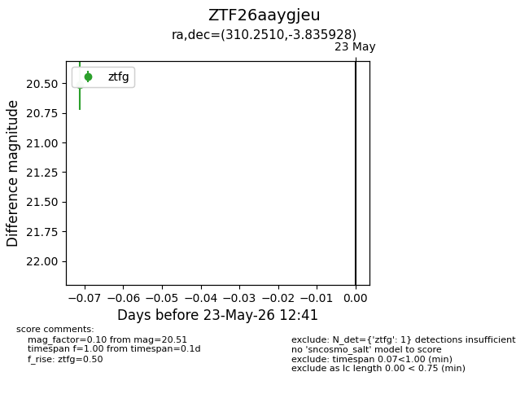
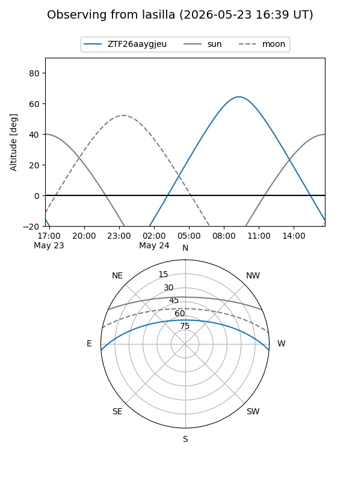
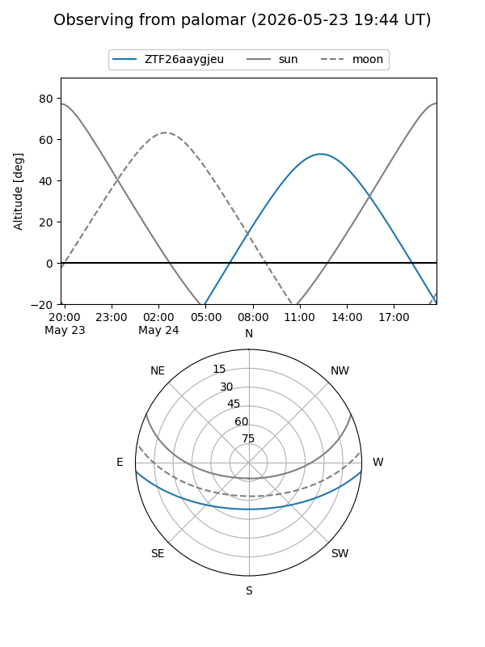

ZTF26aaygjeu
Target ZTF26aaygjeu at 2026-05-23 12:43
Aliases and brokers:
lsst-FINK: link
lsst-Lasair: link
lsst-ALeRCE: link
ztf-FINK: link
ztf-Lasair: link
ztf-ALeRCE: link
alt names
ZTF26aaygjeu (ztf,fink_ztf)
Coordinates:
equatorial (ra, dec) = 310.2510,-3.83593
equatorial (HMS+DMS) = 20:41:00.23,-03:50:09.34
galactic (l, b) = (42.5279,-26.04283)
Flags:
Photometry:
last ztfg=20.51
1 ztfg detections
Lightcurve

Visibility


Additional plots